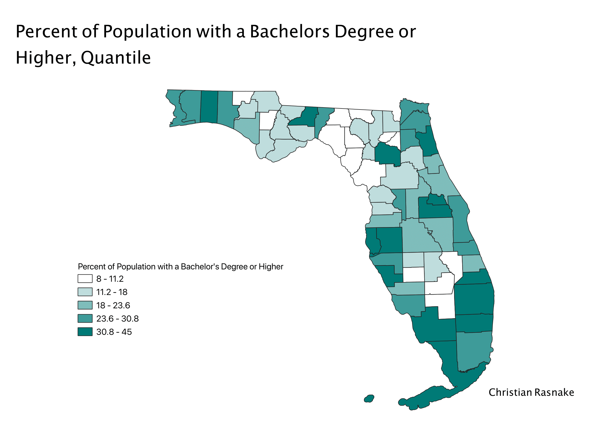
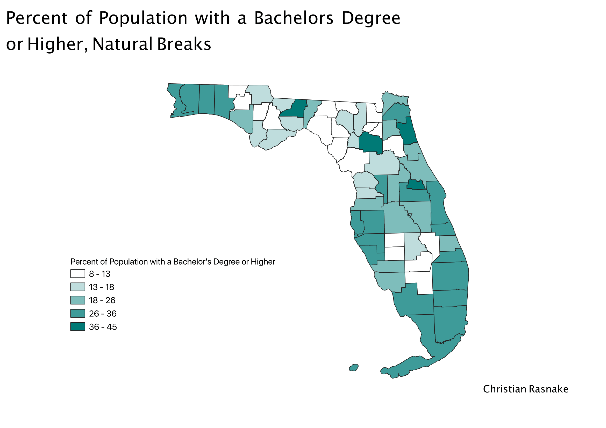
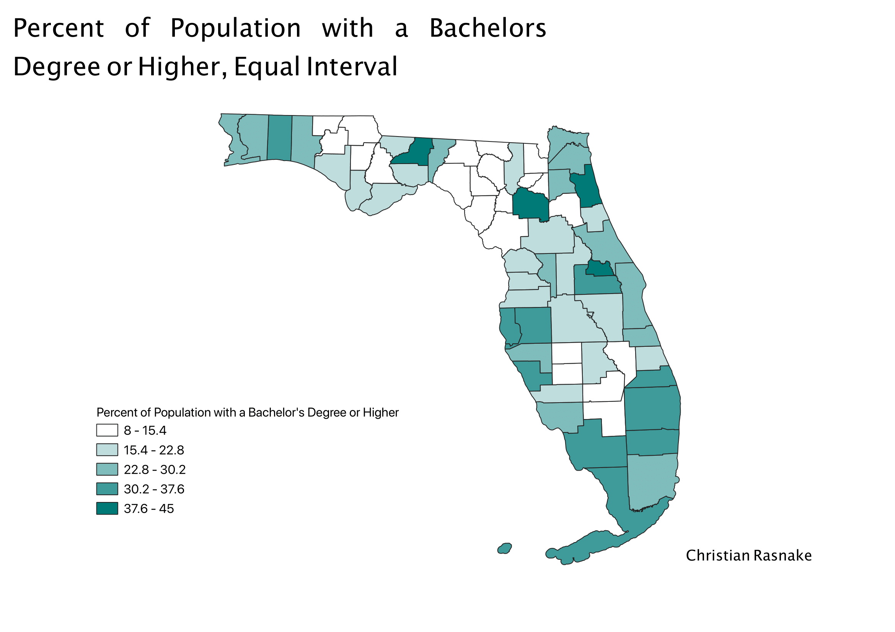

Homework 8: Choropleth with Ratio: Categorized by Quantile, Equal Interval, and Natural Breaks
Christian Rasnake
The ratio I formulated for this assignment was the percentage of people over age 25 in Florida with an educational attainment of a Bachelor’s Degree or higher. To make this ratio, I used the census data of the educational levels for all of the counties in Florida. The CSV file I originally downloaded with the census data also already had the population for each county, so I used this data to show the percentage of people over age 25 in Florida with a Bachelor’s Degree or higher.
Quantile
Classifying my data with quantile classification allowed for the data to be put in order and illustrated in a more exaggerated way. The dark areas with higher percentages got even darker when classifying through quantile. It was interesting to see that the difference of approximately 7 numbers changed the way the map looked so much. Because the data was put in order and divided, the ranges of the more common categories encompassed more numbers, especially for the last class from 30.8 to 45. This classification skewed my data through exaggerative illustration, but would be good to support a case where you are attempting to show large disparities. Also this method uses decimals and not even integers, and I am showing a percentage of people, and you cannot have a percentage of a person.

Natural Breaks
Classifying my data with natural breaks showed a more even distribution of educational attainment in Florida. The values are more evenly distributed across the map, and there do not look to be extreme disparities in educational attainment through this method of classification. This method helps show the pattern better, and could allow for trends to be shown more clearly. The values shown are full integers so this is good for representing a percentage of people. This normalizes the data, but might also not show the exaggerated ends of the spectrum as clearly. For some data, this could disregard actual trends and make them seem less apparent.

Equal Interval
Equal Interval is a method of classification that seems like the natural way of breaking down data because it divides the classes into equal intervals. This method could look skewed depending on the distribution of data. It is not good at separating data that is very close in value, because it does not show much of a difference between them. The intervals between the classes are even, so it is definitely making some assumptions by grouping smaller numbers in with larger numbers, instead of using the data to make the categories. It is most similar looking to the Natural Breaks map above. Another negative of this map is that it has decimals, and for my data you cannot count a portion of a person.
